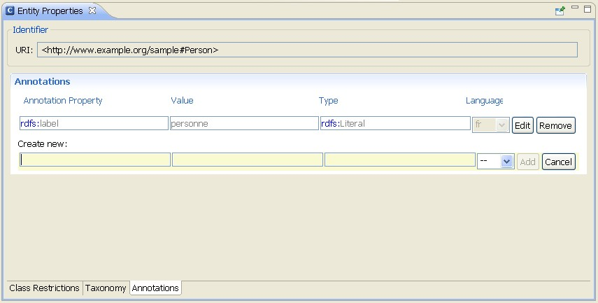

Create an Annotation
Usually, annotations are used to add information to resources of the ontology. They contain useful information such
as who is the creator or what are the readable labels and comments for single elements of the ontology.

To create an annotation, proceed as follows:
- Select an entity in the Ontology Navigator or the Individuals panel.
The entity will be displayed in the Entity Properties panel.
- Go to the Annotations tab.
The annotations will be displayed.
- Create an annotation.
In the Create New text boxes, enter appropriate information.
You can also use the auto-complete feature of the OWL Editor.
- Enter an annotation property.
OWL provides the following built-in annotation properties:
- owl:versionInfo
- rdfs:label
- rdfs:comment
- rdfs:seeAlso
- rdfs:isDefinedBy
In addition, you can also create your own annotation properties.
For more information, see
Annotation Properties.
- Enter a value for the annotation.
- Enter a type for the annotation.
The type is either an XML Schema datatype or an RDFS Literal.
- Select a language code for the annotation.
The language code is only available for type rdfs:Literal.
If you select another type, the language code will be removed.
Likewise, the type will be reset to rdfs:Literal once you
select a language code for the annotation.
- Click Add.
The annotation will be created. To discard your changes, click Cancel.